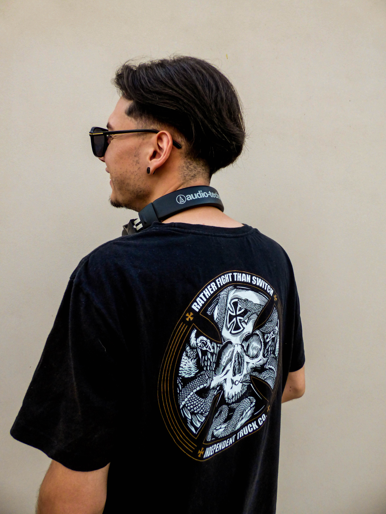

Biografia

Enzo Ariel Pociello, AK “Heart Machine”, es un dj y productor de nacionalidad argentina, nacido el 11 de marzo de 1998 en San Nicolas de los Arroyos, Buenos Aires. Inicio su carrera musical a los 17 años mezclando distintos géneros de musica, para después a los 19 años encaminarse definitivamente por la musica electronica.
Sus primeros pasos fueron tocando el género Tech-house influenciado por artistas de aquella época como Dennis Cruz, Metodi Hristov, Latmun, Leftwing & Kody, Tomy Wahl, entre otros. Logro hacerse un espacio dentro de la escena local de su ciudad, tocando en bares y discotecas de la zona. Luego tuvo un paso breve por Privilege San Bernardo, quienes lo invitaron para hacer Warm-Up tanto del legendario dj JP Sgalia, como de Lucas Blanco quien era residente. En los años siguientes comprendió que lo que más le fascinaba era el género Techno, donde allí pudo conocer muchos artistas de zonas aledañas, allí pudo compartir cabina con djs como Carlos Lorenzi, Krypta, Daian Verna, Mas Bass, Dikron, Maur Gulo, Cucus Klan.
Posteriormente a sus 20 años se introdujo en la producción de tracks, los cuales fue pinchando en sus sets. Para luego en el año 2022 lanzar su primer track en el EP “The Outcast Vol. 03” perteneciente al sello uruguayo Underground Record, y estando próximo a lanzar los restantes tracks que fue produciendo durante todos estos años.
Su estilo propio se caracteriza por tener bajos percusivos, bases rítmicas y melodías progresivas en algunos casos. Toca con el programa Traktor en el modo 4 canales, donde los primeros dos son para mezclar tracks los cuales siguen un equilibrado flujo, y los últimos dos los utiliza para agregar elementos percusivos a la mezcla, tales como, hi hats, claps, rides, snares, etc. Influenciado por la escena Techno actual, pero agregando su sello propio.